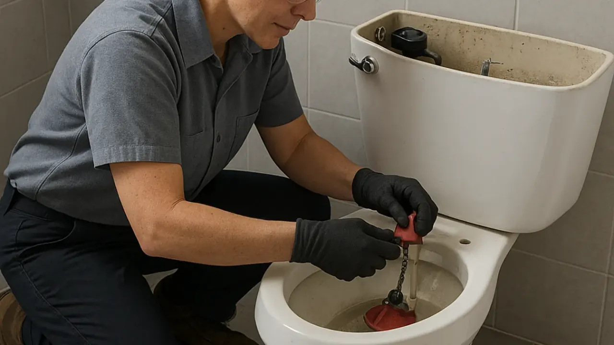

Emergency plumbing services are available 24/7, with response times typically under 30 minutes. Same-day slots are available when the problem cannot wait, and the emergency line is answered around the clock.
Your local Crescent City Plumber in California team
Your Local Plumber in Crescent City, California
If you need a plumber in Crescent City, you have found the local team that handles everything from burst pipes to new installations. In Crescent City (Del Norte County), winter rain is the defining condition — it tests gutters, drains and old sewer lines, and it keeps everything under the house damp. We regularly serve ZIP codes 95531 and 95532 in Crescent City, along with the surrounding neighbourhoods. Our Crescent City work takes us past Battery Point Lighthouse and Jedediah Smith Redwoods State Park and through neighbourhoods like Downtown Crescent City and Battery Point on most weeks. Call us for emergency plumbing, residential plumbing or commercial plumbing — or any of the other services on this page. One number covers the lot. Across Crescent City — from Downtown Crescent City to Northcrest, past Battery Point Lighthouse and Jedediah Smith Redwoods State Park — the week's work covers the whole city. Crescent City sits in Del Norte County, and the plumbing here is shaped by heavy winter rain and constant damp: the faults we see most often are the ones that climate produces, so the van is stocked for them. One number covers all ten services on this page.
100+Local Experience
4.95-Star Rating
24/7Emergency Response
Services available in Crescent City
Plumbing Services Available in Crescent City
The ten services below all run in Crescent City. Each one sets out the scope, the method and what you can expect when the technician arrives.
 Emergency Plumbing ServicesWhen water is where it should not be in Crescent City, our emergency team is a phone call away, any hour of the day or night.See details →
Emergency Plumbing ServicesWhen water is where it should not be in Crescent City, our emergency team is a phone call away, any hour of the day or night.See details → Residential PlumbingEveryday home plumbing in Crescent City — taps, showers, toilets, leaks and the small jobs that keep a house running.See details →
Residential PlumbingEveryday home plumbing in Crescent City — taps, showers, toilets, leaks and the small jobs that keep a house running.See details → Commercial PlumbingPlumbing for shops, offices, restaurants and workplaces in Crescent City — scheduled around your trading hours, not ours.See details →
Commercial PlumbingPlumbing for shops, offices, restaurants and workplaces in Crescent City — scheduled around your trading hours, not ours.See details → Drain CleaningWe clear Crescent City drains and find the cause of the clog, not just the clog itself.See details →
Drain CleaningWe clear Crescent City drains and find the cause of the clog, not just the clog itself.See details → Sewer Line RepairCamera inspection and repair of sewer lines in Crescent City, with trenchless options where the line allows it.See details →
Sewer Line RepairCamera inspection and repair of sewer lines in Crescent City, with trenchless options where the line allows it.See details → Water Heater Repair & InstallationNo hot water in Crescent City? We repair and replace tank and tankless heaters, and tell you honestly which one the job needs.See details →
Water Heater Repair & InstallationNo hot water in Crescent City? We repair and replace tank and tankless heaters, and tell you honestly which one the job needs.See details → Leak Detection & RepairWe track down leaks in walls, floors and underground lines across Crescent City, then repair the failed section.See details →
Leak Detection & RepairWe track down leaks in walls, floors and underground lines across Crescent City, then repair the failed section.See details → Sump Pump & Pipe Leak RepairSump pump and pipe leak work in Crescent City — tested before the wet weather arrives, not after it.See details →
Sump Pump & Pipe Leak RepairSump pump and pipe leak work in Crescent City — tested before the wet weather arrives, not after it.See details →
Toilet Repair & InstallationRunning, leaking or blocked toilets in Crescent City — repaired properly, or replaced with a water-saving model.See details → Kitchen plumbingKitchen plumbing in Crescent City — sinks, taps, dishwashers and disposals, fitted properly and left watertight.See details →
Kitchen plumbingKitchen plumbing in Crescent City — sinks, taps, dishwashers and disposals, fitted properly and left watertight.See details →
Questions about emergency call-outs in Crescent City
Across Crescent City
Plumbing across Crescent City: the neighbourhoods we cover
Our Crescent City route covers the whole city, from Downtown Crescent City to Northcrest. The notes below describe the work we do in each area — the housing, the pipework and the faults that come up most often — shaped by the North Coast conditions around Crescent City and by what our technicians actually see on the route.
01
Downtown Crescent City
For homes around Downtown Crescent City, the most useful visit is often the maintenance one: the shut-off valve checked, the water heater flushed, the visible pipework looked over, and every tap and toilet tested. The small checks are what stop the expensive call-outs, and they take less than an hour.
02
Battery Point
Water heaters work hard around Battery Point, and with soft to moderately hard water in Crescent City the scale inside the tank is what shortens their life. A heater that is flushed once a year and fitted with a sound anode rod will usually reach its full expected life; one that is never flushed will run louder, heat slower and fail years early.
03
Crescent Beach
Outdoor taps and fittings take the worst of it around Crescent Beach. Heavy winter rain and constant damp wear on exposed metal and plastic alike, so we check hose bibs, pipe clips and the runs that sit in the sun or the weather as part of any visit — a stiff tap or a weeping spout is a fitting that is already failing.
04
Northcrest
If the drains around Northcrest run slow, roots are one of the first things we check. Mature trees and older clay or cast-iron laterals are a common combination across the North Coast, and a camera inspection shows in one visit whether the line is sound, root-damaged or bellied — and whether a cut, a lining or a replacement is the honest fix.
Who we serve in Crescent City
One crew, two kinds of work — homes and businesses.
Residential Plumbing Services
Home plumbing in Crescent City is a mix of the everyday and the urgent: the tap that drips at night, the shower that runs cold, and the burst pipe that cannot wait. Our team handles all of it, and the price is agreed before the work begins, not after.
Routine plumbing inspections
Scheduled checks catch worn parts and slow leaks before they shut a restroom or a kitchen down.
Emergency plumbing services
Urgent faults get priority slots, so a burst pipe or backup costs your business hours, not days.
Water heater installations
We install tank and tankless heaters, remove the old unit, and make sure the hot water runs reliably from day one.
Leak detection services
We find hidden leaks with listening and pressure checks, then repair the failed section and test the line.
- Access to 24/7 emergency plumbing services for urgent issues.
- Expert advice on maintaining plumbing systems to prevent future problems.
- Affordable pricing options tailored to fit various budgets.
Commercial Plumbing Services
For businesses in Crescent City, plumbing is about keeping the doors open. We offer scheduled maintenance and rapid response for commercial clients, with written estimates and work fitted around the business calendar.
- Restaurants
- Retail stores
- Hotels
- Office buildings
- Healthcare facilities
Minimized disruption
We plan the job so the property keeps running — work staged around the people using it.
Compliance expertise
Work is done to local code, with the right materials and safety devices, and the paperwork kept in order.
Emergency services
We answer fast and send the nearest technician, because every hour of downtime is lost trade.
Tailored maintenance plans
Scheduled checks catch worn parts and slow leaks before they shut a restroom or a kitchen down.
What your home’s age means
What Crescent City’s homes mean for your plumbing
Two houses on the same street in Crescent City can have completely different plumbing, because the year they were built decides what is in the walls. Knowing what era a home belongs to tells you what to check, what is likely to fail first, and whether a repair or a replacement is the honest answer.
Built before 1960: galvanised steel and cast iron
Homes built before about 1960 usually have galvanised steel supply pipes and cast-iron drains. Galvanised steel rusts from the inside, so the bore narrows over decades: pressure falls, water runs brown after a holiday away, and eventually a pinhole leak appears. Cast-iron drains scale and sag in the same way. A home of this age in Crescent City is worth a proper look at the pipework, even if nothing has failed yet — the first signs are easy to miss.
1960s to 1980s: copper supply, plastic drains
The 1960s to 1980s brought copper supply lines and plastic drains, and most of that work is still sound in Crescent City. Copper's weakness is pinhole leaks where the water chemistry is aggressive, and the drains' weakness is age — joints and fittings from this era are now old enough to fail. The checks are targeted: pressure, visible joints, and the busiest bathrooms first.
1990s to today: PEX and CPVC
From the 1990s onward, PEX and CPVC took over: flexible, freeze-resistant, quick to install. The failure points moved to the fittings and the manifold, and to exposed runs left in the sun. A home of this era in Crescent City rarely needs repiping — it needs its fittings, its manifold and its water heater checked, which is a smaller job and a shorter visit.
On the North Coast, damp is the thread through all three eras: months of wet weather keep crawl spaces moist, corrode exposed pipework and saturate the ground around buried laterals. Ventilation under the house and clear gutters matter as much here as the pipe material in the walls.
Service by service in Crescent City
Every service we run in Crescent City.
Each service below is a full breakdown of how the work is scoped, priced and carried out in this city — not a generic description.
Emergency Plumbing ServicesResidential PlumbingCommercial PlumbingDrain CleaningSewer Line RepairWater Heater Repair & InstallationLeak Detection & RepairSump Pump & Pipe Leak RepairToilet Repair & InstallationKitchen plumbing
01
Emergency Plumbing Services
Emergency Plumbing Services
A plumbing emergency in Crescent City does not wait for office hours, and neither do we. The first thing we do on an emergency call is help you stop the damage — where the main shut-off is, what to switch off, what not to touch — and then get a technician to you. Burst pipes, major leaks, sewage backups and a water heater flooding the garage all count as emergencies here, day or night.
24/7 Availability for Emergencies
Our emergency plumbing services are available 24/7. Whether it's a burst pipe or a severe leak, we respond promptly to minimize damage. Our trained professionals are equipped to handle any urgent plumbing situation. In Crescent City that means a real person on the phone at 2am, not a voicemail, and a technician who arrives with the parts to make the situation safe on the first visit.
Quick Response Times
In Crescent City, time is of the essence during plumbing emergencies. Our team prioritizes rapid response, ensuring that we arrive at your location quickly to assess and resolve the issue efficiently. The North Coast conditions around Crescent City shape what goes wrong — heavy winter rain and constant damp — so the emergency kit on the van is stocked for the faults this area actually produces.
Expert Diagnosis and Repair
Our skilled plumbers utilize advanced tools for expert diagnosis of plumbing issues. From clogged drains to overflowing toilets, we provide effective repairs tailored to the unique needs of Crescent City residents.
- Rapid response to plumbing emergencies 24/7
- Clear advice on stopping the damage before we arrive
- Written price agreed before work starts
- Follow-up check that the repair is holding
02
Residential Plumbing
Residential Plumbing
Our residential plumbing services provide homeowners with reliable solutions for all their plumbing needs. we focus on quality workmanship and customer satisfaction, ensuring your home remains comfortable and functional.
Comprehensive Plumbing Installations
Our residential plumbing services include comprehensive installations for kitchens and bathrooms in Crescent City. We ensure that all fixtures are installed correctly, enhancing both functionality and aesthetics. Homes in Crescent City range from older properties with ageing pipework to newer builds, so the work ranges too — and the price is agreed before we start, either way.
Routine Maintenance Services
Regular maintenance is crucial for preventing plumbing issues. Our team offers routine inspections and maintenance services to keep your plumbing system in Crescent City running efficiently and to avoid costly repairs. Because heavy winter rain and constant damp affect homes in Crescent City, we check the parts that wear first in this area as a matter of routine, not as an extra.
Emergency Repairs for Homeowners
When plumbing emergencies strike, our residential plumbing experts are ready to assist. We provide fast and effective repairs to address issues like leaks, clogs, and more, ensuring your home remains comfortable.
- Professional installations of fixtures and appliances
- Thorough plumbing inspections for your home
- Timely repairs to minimize disruptions
- Clear written prices before work begins
03
Commercial Plumbing
Commercial Plumbing
As a leading commercial plumbing company, we understand the unique needs of businesses in the area. Our team of experts provides tailored plumbing solutions to ensure your operations run smoothly and efficiently.
Tailored Solutions for Businesses
Our commercial plumbing services are tailored to meet the specific needs of local businesses. We provide customized solutions that ensure minimal disruption to your operations. For businesses in Crescent City that means a named contact, a written plan and work scheduled to suit trading hours — including evenings and weekends where the job needs it.
Compliance with Local Codes
We ensure that all commercial plumbing installations comply with Crescent City regulations. Our knowledgeable team stays updated on local codes to guarantee that your business meets all necessary standards. Commercial systems in Crescent City face the same North Coast conditions as homes — heavy winter rain and constant damp — plus heavier use, so we check wear points on a schedule rather than waiting for a failure.
Preventative Maintenance Plans
Our preventative maintenance plans help businesses avoid costly plumbing emergencies. Regular inspections and maintenance ensure your plumbing systems operate efficiently, saving you time and money.
- Comprehensive plumbing assessments for businesses
- Rapid response to commercial plumbing emergencies
- Expert installation of commercial fixtures
- Regular maintenance plans to prevent issues
04
Drain Cleaning
Drain Cleaning
Our drain cleaning services are designed to keep your plumbing system flowing smoothly. We provide effective solutions to prevent clogs and ensure your drains function efficiently.
Advanced Cleaning Techniques
We utilize advanced drain cleaning techniques to tackle stubborn clogs in Crescent City. Our methods ensure that your drains are cleared efficiently, preventing future blockages and plumbing issues. In Crescent City the first question on a slow drain is always the same: is it local, or is it further down the line? A local blockage clears in minutes; a line problem needs a camera, and the two should not be confused.
Regular Drain Maintenance
Regular drain cleaning is essential for maintaining a healthy plumbing system. Our team offers scheduled maintenance services to keep your drains clear and functioning optimally throughout the year. Because heavy winter rain and constant damp affect drains here, a cleaning visit in Crescent City includes a check of the line's condition, not just a clear-and-go.
Emergency Drain Cleaning Services
When you experience a drain emergency, our team is ready to respond. We provide fast and effective emergency drain cleaning services to address issues before they escalate.
- High-quality drain cleaning services for homes
- Advanced equipment for effective cleaning
- Camera inspection to find the real cause
- Expert advice on drain care and maintenance
05
Sewer Line Repair
Sewer Line Repair
When it comes to sewer line repair in Crescent City, our skilled team is ready to tackle any challenge. We understand the importance of a functioning sewer system and offer prompt, reliable services to restore your plumbing quickly.
Comprehensive Sewer Inspections
We begin with comprehensive sewer inspections using advanced technology. This allows us to accurately diagnose issues and determine the best course of action for sewer line repair in Crescent City. Every sewer inspection in Crescent City is recorded, so you can see the fault yourself and understand why the recommended fix is the right one.
Trenchless Repair Options
Our trenchless sewer line repair options minimize disruption to your property. We can repair or replace your sewer lines without extensive excavation, making it a convenient choice for homeowners. Where the line allows it, trenchless repair in Crescent City keeps the garden and driveway intact; where it does not, we dig neatly and put it back properly.
Preventative Sewer Maintenance
Preventative maintenance is key to avoiding future sewer line problems. Our team offers regular inspections and maintenance services to keep your sewer system in Crescent City functioning smoothly.
- Thorough inspections to identify sewer issues
- Fast and effective sewer line repairs
- Trenchless options where the line allows it
- Compliance with local plumbing regulations
06
Water Heater Repair & Installation
Water Heater Repair & Installation
Our water heater repair & installation services ensure you have reliable hot water when you need it. we provide expert solutions tailored to your specific needs.
Expert Water Heater Installations
We provide expert water heater installation services tailored to your needs. Whether you prefer traditional or tankless systems, our team ensures proper installation for optimal performance. In Crescent City the first question on a dead heater is whether it is the thermostat, the element or the tank itself — three different faults, three different prices, and the diagnosis takes minutes with the right meter.
Timely Repairs for All Models
Our experienced plumbers are skilled in repairing all types of water heaters. We offer timely repairs to restore hot water access in your Crescent City home without delay. Because the water in Crescent City is soft to moderately hard, a new heater here gets a flushing schedule from day one, not as an afterthought.
Routine Maintenance for Longevity
Routine maintenance is essential for prolonging the life of your water heater. We offer comprehensive maintenance services to keep your system running efficiently and prevent unexpected breakdowns.
- Professional installation of various water heaters
- Timely repairs for all types of water heaters
- Maintenance plans to extend water heater life
- Honest advice on repair versus replacement
07
Leak Detection & Repair
Leak Detection & Repair
Our leak detection & repair services are essential for maintaining your home's plumbing integrity. We utilize advanced technology to identify leaks quickly, ensuring effective repairs that protect your property.
Advanced Leak Detection Technology
We use advanced leak detection technology to pinpoint hidden leaks in your plumbing system. This ensures that we accurately identify issues without unnecessary damage to your property. Detection in Crescent City starts with the meter and the bill: if water is moving when everything is off, there is a leak, and the equipment tells us where.
Comprehensive Repair Services
Once leaks are detected, our team provides comprehensive repair services. We address leaks efficiently to prevent further damage and restore your plumbing system's integrity. Homes in Crescent City with older pipework are more likely to spring pinhole leaks, so a detection visit here includes a check of the surrounding runs, not just the one that failed.
Preventative Measures for Homeowners
Preventative measures are crucial for avoiding leaks. Our team offers advice and maintenance services to help Crescent City homeowners protect their plumbing systems from future leaks.
- Thorough leak detection using advanced tools
- Fast and effective leak repairs
- Minimal disruption — we open one area, not the wall
- Preventative maintenance recommendations
08
Sump Pump & Pipe Leak Repair in Crescent City
Sump Pump & Pipe Leak Repair in Crescent City
A sump pump only matters on the worst day of the year, which is exactly when it must work. In Crescent City we service pumps before the wet season — float switch, check valve, discharge line and power — so the one night the pump is needed is not the night it is found seized. Pipe leaks get the same treatment: found properly, repaired properly, and checked again before we leave.
Expert Sump Pump Installations
We specialize in sump pump installations to protect your home from flooding. Our team ensures that your sump pump is correctly installed and functioning effectively to prevent water damage. Sump systems in Crescent City are tested under load, not just switched on — a pump that hums is not a pump that moves water.
Timely Pipe Leak Repairs
Our plumbers are skilled in identifying and repairing pipe leaks promptly. We understand the urgency of pipe leaks and work quickly to minimize damage to your property. With heavy winter rain and constant damp affecting homes in Crescent City, pipe leaks here often start at joints and fittings, so we check the whole run once the failed section is found.
Routine Maintenance for Sump Pumps
Routine maintenance is essential for sump pumps. We offer regular inspections and maintenance services to ensure your sump pump operates efficiently when you need it most.
- Professional installation of sump pumps
- Timely repairs for pipe leaks
- Routine maintenance to prevent flooding
- Full test of the system before sign-off
09
Toilet Repair & Installation in Crescent City
Toilet Repair & Installation in Crescent City
A running toilet can waste a surprising amount of water, and a rocking toilet is usually a failed wax ring quietly rotting the floor underneath. In Crescent City we repair first where repair is honest — flapper, fill valve, flush mechanism — and replace where the bowl or the trap is the problem, with a water-saving model that fits the bathroom and the household. The floor is checked, the seal is new, and the toilet does not rock when we leave.
Expert Toilet Installations
We offer expert toilet installation services tailored to your needs. Whether you are upgrading or replacing an old unit, our team ensures proper installation for optimal performance. Toilet repairs in Crescent City start with the cistern, not the bowl — most running toilets are a worn flapper or a mis-set fill valve, both cheap fixes.
Timely Repairs for Malfunctions
Our plumbers are experienced in diagnosing and repairing toilet malfunctions. We provide timely repairs to restore functionality and prevent further issues in your Crescent City home. A replacement toilet in Crescent City is fitted with a new wax ring and a new supply line as standard, and the floor underneath is checked before the new unit goes in.
Routine Maintenance for Longevity — toilets
Routine maintenance is essential for prolonging the life of your toilet. We offer maintenance services to keep your toilet running smoothly and efficiently.
- Professional installation of various toilet models
- Timely repairs for toilet malfunctions
- Water-saving models fitted and explained
- Expert advice on toilet selection
10
Kitchen plumbing in Crescent City
Kitchen Plumbing in Crescent City
The kitchen is where a household's plumbing works hardest — hot water, grease, food waste and a dishwasher all sharing one set of pipes. In Crescent City we fit and repair sinks, taps, wastes, dishwashers and disposals, and we pay attention to the details that cause call-backs: the dishwasher drain loop, the trap alignment, the supply-line shut-offs. A kitchen job is finished when everything runs, nothing drips, and the cupboard underneath stays dry.
Comprehensive Kitchen Installations
We provide comprehensive kitchen plumbing installations, including sinks, faucets, and dishwashers. Our team ensures that all installations are performed to the highest standards in Crescent City. Kitchen work in Crescent City covers the full run — sink, tap, waste, dishwasher hookup and disposal — so one visit sorts the whole area.
Efficient Repairs for Kitchen Fixtures
Our plumbers are skilled in repairing kitchen plumbing fixtures. Whether it's a leaky faucet or a clogged sink, we offer efficient repairs to restore your kitchen's functionality. Grease is the usual cause of slow kitchen drains in Crescent City, so a repair here includes advice on keeping it out of the line in future.
Routine Maintenance for Kitchen Plumbing
Routine maintenance is crucial for preventing kitchen plumbing issues. We offer regular inspections and maintenance services to keep your kitchen plumbing in Crescent City running smoothly.
- Professional installation of kitchen fixtures
- Timely repairs for kitchen plumbing issues
- Dishwasher and disposal hookups done properly
- Routine maintenance to prevent clogs
More than a service list
How We Execute Plumbing Services
Plumbing in Crescent City has to fit local rules and local buildings. Our crew plans each job around the property in front of them, not a standard template.
Frequent heavy rains
Heavy rainfall can cause flooding and increase the risk of pipe bursts, leading to urgent plumbing needs. The North Coast conditions around Crescent City make this a recurring issue rather than a one-off.
How we help: Our team is equipped to respond quickly to emergency situations, providing prompt repairs and preventive maintenance.
Older plumbing infrastructure
Many homes in Crescent City have aging plumbing systems that are prone to leaks and failures. Homes in Crescent City see this more often than the state average, because heavy winter rain and constant damp work on the system year-round.
How we help: We specialize in leak detection and repair, ensuring that older systems are maintained and upgraded as necessary.
Coastal corrosion
Saltwater exposure can accelerate corrosion in plumbing fixtures and pipes. This is the kind of fault that starts small in Crescent City and becomes expensive if it is ignored for a season.
How we help: We recommend corrosion-resistant materials and perform regular inspections to mitigate damage.
Saturated ground backing up sewers
After weeks of rain the ground is saturated and a partially blocked lateral backs up into the lowest fixture.
How we help: We clear the blockage and camera the line to find the cause — roots, a belly or a broken joint — then fix it properly.
Reviews from Crescent City customers
Reviews from Crescent City Customers
4.9★★★★★verified reviews
★★★★★
“Pro plumbing California provided exceptional service when I had a plumbing emergency. They arrived quickly and fixed the issue efficiently. Highly recommend!”
ER
Emily R.Downtown Crescent City
Verified★★★★★
“I had my water heater replaced by Pro plumbing California. They were professional and the new unit works perfectly. Great job!”
JT
James T.Crescent Beach
Verified★★★★★
“The team was friendly and knowledgeable. They helped with my clogged drain and provided tips for maintenance. Will definitely use them again!”
SL
Sarah L.Northcrest
Verified
How a typical visit works
How We Handle Common Plumbing Jobs
Every job starts with a look at the problem and a clear price before work begins. Here is what a typical visit looks like for three of the most common jobs.
The problem — Sewer line repair
Sewer backups or slow drains across the home
What we did — Sewer line repair
The fault is found on camera — usually roots or a damaged joint — and the fix is agreed with you, using trenchless repair when the line allows it.
The result — Sewer line repair
The sewer runs clear again, the repair is tested before sign-off, and disruption to the garden or driveway is kept to a minimum.
The problem — Slab leak detection
The sound of running water when every tap is off
What we did — Slab leak detection
The leak is located with acoustic listening and electronic detection, so only one small area needs opening — then the line is rerouted or repaired, whichever does less damage.
The result — Slab leak detection
The leak is stopped, the floor is made good, and the meter is checked to confirm nothing is still running.
The problem — Water heater
Cold showers, or water pooling around the heater
What we did — Water heater
Our technician looks the heater over, quotes repair against replacement honestly, installs the chosen option, and checks hot water at the taps before packing up.
The result — Water heater
The household has hot water again, the installation is checked for leaks, and the space is tidied before we go.
Early warning signs
Have us take a look →
Signs You Need a Plumber in Crescent City
01
Frequent clogs
02
A warm patch on the floor, or damp at the base of a wall
03
Unpleasant odors from drains
04
A water bill that rises with no change in use
05
Low water pressure
Crescent City problem patterns
Common Plumbing Problems in Crescent City
The same faults come up again and again on Crescent City call-outs. They follow from the age and build of the homes here, not from bad luck — and most of them cost far less fixed early than after they fail.
01
Clogged drains due to heavy rains
Why it happens: The frequent heavy rains can lead to debris buildup in drainage systems, causing clogs and backups.
Our approach: We use advanced drain cleaning techniques to ensure that your drainage systems remain clear and functional.
02
Corrosion in older pipes
Why it happens: Many homes in Crescent City have older plumbing systems that are susceptible to corrosion from saltwater exposure.
Our approach: We recommend regular inspections and the use of corrosion-resistant materials to prolong the lifespan of your plumbing.
03
Water heater failures in winter
Why it happens: Cold temperatures can strain water heaters, leading to failures when they are needed most.
Our approach: We provide routine maintenance and prompt repairs to ensure your water heater operates efficiently during winter.
04
Sewer line blockages
Why it happens: Tree roots and aging infrastructure often cause blockages in sewer lines, particularly in older neighborhoods.
Our approach: We use trenchless repair methods to address sewer line issues with minimal disruption to your property.
In depth
Common plumbing problems in Crescent City, in depth
The four problems above are the ones we see most often in Crescent City. Below is what prevents each of them, plus two more faults that the North Coast conditions around Crescent City produce regularly, covered in full.
01
Preventing clogged drains due to heavy rains
How to prevent it: Keep leaves, grit and grease out of the drains, and have a slow drain looked at while it is still draining — a line that slows gradually is heading for a full blockage.
02
Preventing corrosion in older pipes
How to prevent it: Check the places leaks start — under sinks, behind toilets, around the water heater — once a year, and fix a weeping joint before it becomes a stain on the ceiling below.
03
Preventing water heater failures in winter
How to prevent it: Flush the tank once a year and replace the anode rod on schedule. If the hot water runs out faster than it used to, book the flush before the heater gives up entirely.
04
Preventing sewer line blockages
How to prevent it: Find the main shut-off valve before you need it, and make sure everyone in the house knows where it is. In a leak, the first minute matters more than the first hour.
05
Seized shut-off valves
Why it happens: Stopcocks and shut-off valves seize from disuse and corrosion, and the failure only shows up in an emergency, when the water cannot be turned off.
How we fix it: We free the valve where possible and replace it with a lever valve where it has seized solid, so the water can be shut off in seconds.
How to prevent it: Work every shut-off valve in the house twice a year — kitchen, bathroom, water heater, and the main. A valve that moves freely is the cheapest insurance in plumbing.
06
Noisy pipes and water hammer
Why it happens: A bang when a tap shuts, or a rattle when the washing machine fills, usually means loose clips, high pressure, or air in the lines — and it gets worse, not better, if it is ignored.
How we fix it: We secure the loose runs, check the pressure, and fit a water hammer arrestor where the bang is worst. The fix is usually small; the damage from ignoring it is not.
How to prevent it: Note when the noise started and which tap causes it — that history tells the technician where to look, and whether pressure or a loose clip is the cause.
Questions about common problems in Crescent City
Common plumbing issues in Crescent City include clogged drains, pipe corrosion, and sewer line blockages, often exacerbated by the coastal climate. The faults we see most often in Crescent City are the ones the North Coast conditions produce — heavy winter rain and constant damp — so the first visit usually starts with those checks.
Months of wet weather keep the ground saturated and the air under the house moist, which corrodes exposed pipework and encourages mould. Ventilating the crawl space, lagging cold-water lines so they do not sweat, and making sure surface water runs away from the house all help. We look under the house as part of a maintenance visit.
Yes — mature trees and older clay or cast-iron sewer laterals are a combination that ends in root intrusion sooner or later. A drain that slows every winter is usually telling you the roots have found a joint. A camera inspection shows exactly where the roots are and whether a cut, a lining or a replacement is the right fix.
Clear starting points
Plumbing Pricing in Crescent City
In Crescent City a straightforward repair in 2026 generally costs between $180 and $450. The exact figure depends on the fault, the parts and the timing — and it is agreed in writing before the work starts, so there are no surprises.
We offer flexible booking, including same-day visits for urgent problems, and emergency cover through the night for Crescent City.
01Type of service required
Certain services, like sewer line repairs, may cost more due to the complexity and required equipment.
02Emergency response needs
Emergency services typically incur higher fees due to the immediate response required, often ranging from $200 to $800.
03Materials used
The choice of materials, such as PEX tubing or copper fittings, can influence overall costs significantly.
Questions about plumbing prices in Crescent City
Plumbing service costs in Crescent City typically range from $180 to $450, depending on the complexity of the job and materials used. Bigger jobs such as a sewer repair or a full repipe are quoted separately, in writing, before any work starts.
Crescent City through the year
How Seasons Affect Plumbing in Crescent City
Through the year in Crescent City, the weather does most of the damage to plumbing. These are the seasonal patterns to plan around.
Spring
Spring is the season to undo winter’s wear: clear the gutters, check the drains, and look over any pipework that spent the winter cold and damp.
Tip: Schedule a plumbing inspection to ensure your drainage systems are clear and functioning properly.
Summer
Summer heat can cause pipes to expand, leading to leaks and pressure issues.
Tip: Keep an eye on your water bill for unexpected increases, which may indicate leaks that need addressing.
Fall
Autumn is preparation season: gutters cleared before the rain, exposed pipes lagged before the cold, and the water heater flushed before it has to work hardest.
Tip: Book a maintenance check in the autumn — it is the cheapest visit of the year, and it prevents the expensive ones.
Winter
Winter is when small problems become emergencies: a cold snap freezes an exposed pipe, a scaled heater gives up under the extra load, and a blocked drain backs up in the first storm.
Tip: Before the cold arrives, insulate exposed pipes, clear the gutters, and have the water heater checked — the three jobs that prevent most winter call-outs.
Local plumbing notes
Local Notes for the Area
Plumbing in Crescent City is shaped by local conditions. The notes below are general to the area — worth knowing before you book, and useful when talking to the technician.
- This area is in Del Norte County.
- Heavy winter rain can overwhelm drains and gutters; keep them clear before the rainy season.
- Persistent damp can corrode exposed fittings and encourage mould in crawl spaces; ventilation and leak checks help.
- Tree roots are a common cause of trouble in older sewer lines in the area; slow drains across the home are a sign to have the line checked.
- Winter storms here are long and heavy, so gutters, downspouts and surface drains need to be clear before the rainy season starts, not during it.
- Redwood and fir roots are strong and persistent; slow drains in several rooms at once usually mean roots in the sewer lateral rather than a single clog.
Wherever you are in California, the basics are the same — find the main water shut-off before you need it, consider a seismic shut-off valve, and do not let small leaks run.
Water and weather in Crescent City
Water and weather in Crescent City: what it does to plumbing
Plumbing fails for local reasons. In Crescent City the local reasons are heavy winter rain and constant damp, plus cool, wet winters and mild, foggy summers — and understanding them is the difference between a repair that lasts and one that comes back next season.
Winter on the North Coast is long and wet, and the work it creates is drainage work. Gutters and downspouts that cannot keep up, surface drains that silt up, crawl spaces that stay damp for months, and sewer laterals that back up when the ground is saturated. Clearing gutters before the rainy season and keeping downspouts running away from the house prevents most winter call-outs — and a drain that gurgles when it rains is a lateral telling you it is nearly full.
Damp is the North Coast's slow problem. Months of wet weather keep crawl spaces moist, corrode exposed pipework and encourage mould where air does not move. Ventilating the crawl space, lagging cold-water lines so they do not sweat, and looking under the house once a year will keep the damp from becoming damage.
Roots are the North Coast's sewer problem. Mature trees and older clay or cast-iron laterals are a combination that ends in root intrusion, and a drain that slows every winter is usually telling you the roots have found a joint. A camera inspection shows exactly where they are and whether a cut, a lining or a replacement is the right fix.
Local problem patterns
Plumbing problems common on the North Coast
The North Coast is wet, wooded and old — and its plumbing shows it. These are the recurring problems in Crescent City.
- Slow leaks hidden by damp — because everything under the house is already moist, a dripping joint can run for a season before anyone notices.
- Storm debris in outdoor drains — leaves, needles and branches wash into yard drains with every storm and need clearing before the next one.
- Gutters full of redwood debris — needles and leaves from tall trees fill gutters fast, and the overflow runs down walls and into foundations.
- Outdoor taps and garden lines in the rain — garden plumbing left connected through the wet season corrodes and leaks where nobody looks.
- Rain-overwhelmed drains — long winter storms dump more water than partly blocked gutters and surface drains can carry.
Clear the gutters before the rains, camera the sewer line if drains slow across the house, and check the crawl space yearly — the North Coast routine.
We know the route
Landmarks and Points of Interest in Crescent City
When you describe where you are in Crescent City, these landmarks help. They are well-known spots, not our premises — useful for directions only.
Battery Point Lighthouse
Most people in Crescent City know Battery Point Lighthouse, so it works well as a landmark when you are describing where you are. It is a reference point for directions only — not our premises or a service location.
Jedediah Smith Redwoods State Park
Most people in Crescent City know Jedediah Smith Redwoods State Park, so it works well as a landmark when you are describing where you are. It is a reference point for directions only — not our premises or a service location.
Primary Crescent City response zone
Crescent City service coverage
Is your ZIP on the route?
The ZIP codes below are the ones our Crescent City route covers most often. If yours is not on the list, call anyway — nearby areas usually qualify, and the dispatcher will confirm.
9553195532
Popular neighborhoods
Check my address →
Downtown Crescent City · Battery Point · Crescent Beach · Northcrest
Questions about coverage and ZIP codes in Crescent City
Yes. Our Crescent City route covers 95531, 95532, including Downtown Crescent City and Battery Point. If your ZIP is not listed, call and the dispatcher will confirm — nearby areas usually qualify.
Crescent City plumbing FAQ
FAQs for Our Plumbing Services
Before you call, these answers cover the questions we hear most from Crescent City homes and businesses.
Call +1 (619) 612-9370 →Crescent City features a mix of older plumbing systems and modern installations, often requiring specialized knowledge for repairs. It depends on the era of the house — pre-1960s galvanised steel, 1960s–80s copper, later PEX and CPVC — and the first visit here always starts with a look at the pipework's age.
Yes, we offer warranties on our plumbing services and materials used, ensuring your peace of mind after repairs. All ten services on this page run in Crescent City, from emergency call-outs to kitchen plumbing, and the dispatcher will confirm which one your job needs.
Outside Crescent City?
Nearby Cities We Serve
01Los AngelesLos Angeles is about 620 miles southeast, but we often receive requests from residents traveling to Crescent City.↗02San DiegoSan Diego is approximately 730 miles to the southeast, with some customers visiting Crescent City for vacations.↗03San JoseSan Jose is about 330 miles southeast of Crescent City, and we occasionally serve clients from this area during their trips to Crescent City.↗04San FranciscoSan Francisco is roughly 290 miles to the south, with many residents seeking plumbing services in Crescent City.↗
Credentials on file
Trust and Compliance in Crescent City
Licenses
- California State Plumbing License
- Available on request
Certifications
- EPA Certification
- U.S. Environmental Protection Agency
Insurance
- State Farm
- $2M general liability
Local affiliations- Crescent City Chamber of Commercemember

Crescent City dispatch is ready
Need a Reliable Plumber in Crescent City?
Tell us what is wrong and get a free, written estimate. The dispatcher confirms the visit, and the work only starts once you have agreed the price.
Request Crescent City service
Send the details. We'll handle the next step.
Tell us what is happening and where you are. Our team will call to confirm the right appointment and timing.
Crescent City service hubCrescent City, California+1 (619) 612-9370Open 24 hours · 7 days a week